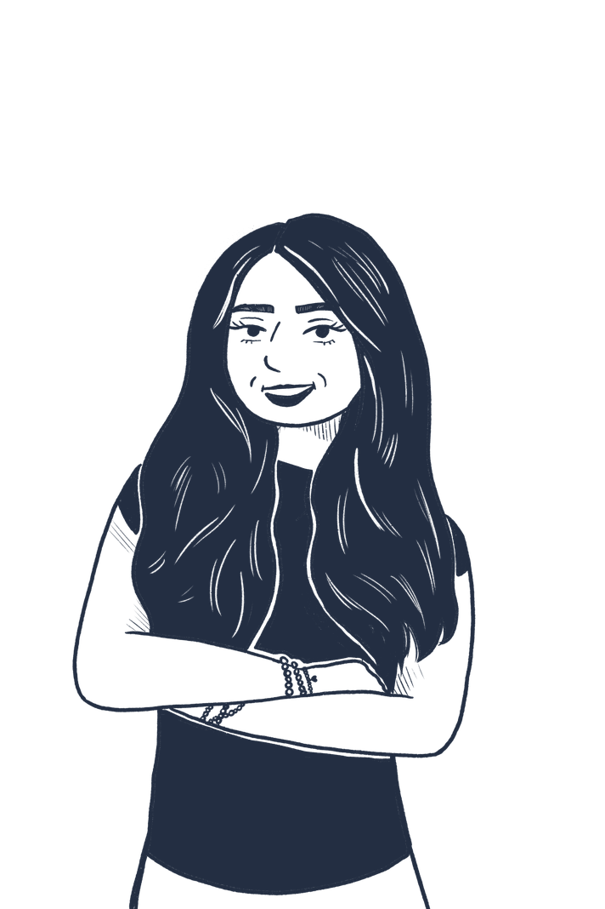

MEET THE DESIGNER
About Sicily
I’m an Omaha native, Interaction Design student at the University of Kansas graduating in May 2027, and aspiring product designer headed for the software industry.
I started in Visual Communication Design, but found my passion for product design early in college. UX added the user-centered thinking that I was missing, and now my work feels even more impactful and purposeful.
I’m always excited to learn new tools, work with new people, and make cool things. I’m especially interested in AI tools, startups, and teams that prioritize design alongside engineering.
LET’S WORK TOGETHER